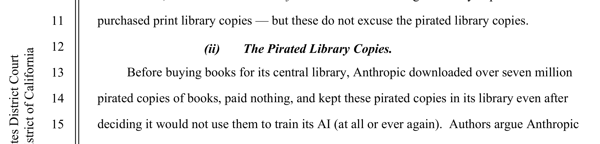
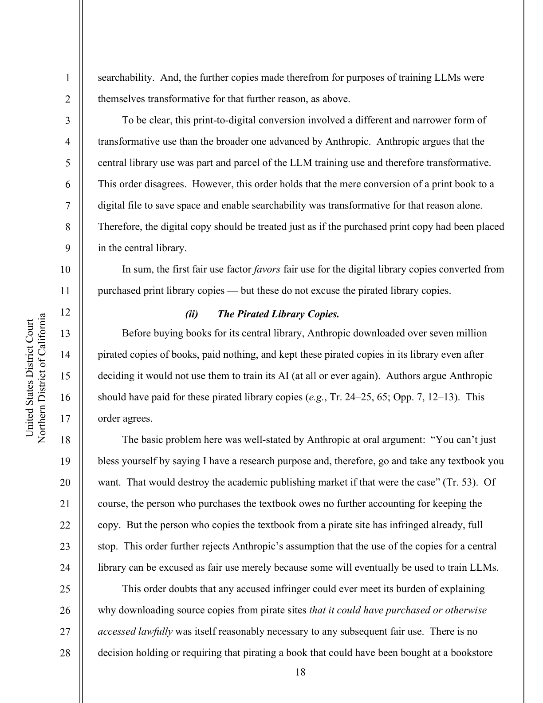

Page 05 of 11 — Supporting Argument I
They Don’t Believe Their Own Rule
In February 2026 Anthropic put out a security report that read like an indictment:
Exhibit 05-A · Anthropic, Feb. 23, 2026“We have identified industrial-scale campaigns by three AI laboratories—DeepSeek, Moonshot, and MiniMax—to illicitly extract Claude’s capabilities to improve their own models.”
The scale of the distillation is important to note:
Exhibit 05-B · Anthropic“These labs generated over 16 million exchanges with Claude through approximately 24,000 fraudulent accounts, in violation of our terms of service and regional access restrictions.”
Sixteen million exchanges. Keep in mind, scale was an attribute the AI industry used to use to get around copyright laws. Swallowing the entire internet was what supposedly made training “transformative” (Bartz v. Anthropic 13). But when the direction flips, the vocabulary flips with it. Harvesting everyone’s books is learning. Mining Claude is an attack. The report even admits the contradiction:
Exhibit 05-C · Anthropic“Distillation is a widely used and legitimate training method. For example, frontier AI labs routinely distill their own models to create smaller, cheaper versions for their customers.”
So the technique itself is fine. The problem is apparently just who was on which end of it. The rivals got “powerful capabilities from other labs in a fraction of the time, and at a fraction of the cost” (“Detecting”). That’s word for word the same complaint every novelist has been making about the labs since 2022.

Open the full page of the order

Two honest notes here. “Attack” is normal security language for fraud at scale, so the vocabulary flip proves less than it looks like. What it really exposes is that there’s no stated principle separating the two minings besides who got mined. And hypocrisy on its own doesn’t pick a rule. It just proves nobody in this fight will hand us a neutral one. Funny enough, Anthropic’s own test for wrongdoing is “the pattern”: “[m]assive volume concentrated in a few areas, highly repetitive structures” (“Detecting”). That’s a conduct test. They conceded the principle without even noticing.